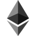

Chainspot
Networks



Live preview — open the official Chainspot app from your own wallet.
Official dAppNon-custodialEVM + non-EVM
What is Chainspot?
Chainspot is a non-custodian omnichain DeFi protocol for managing DeFi positions across EVM and non-EVM networks, as described in its official documentation. The app focuses on cross-chain swaps, bridging, and routing through integrated liquidity providers.
Chainspot at a glance
CategoryOmnichain bridge and swap router
NetworkEVM and non-EVM chains
CustodyNon-custodial
Official appapp.chainspot.io
Documentationdocs.chainspot.io
Chainspot supported chains and tokens
Chainspot is searched most often as a cross-chain routing app, so supported networks matter more than a single pool or chain. The official site describes Chainspot as an omnichain protocol for EVM and non-EVM chains, and its ecosystem materials list major networks such as Ethereum, BNB Chain, Polygon, Arbitrum, Avalanche, Tron and TON. Token availability is route-dependent: the app combines bridge and DEX liquidity, so a token may be available on one source and destination pair but not another. Before signing, use the live quote screen to confirm the source chain, destination chain, token contract, estimated output, route provider and destination wallet.
Chainspot bridge fees and routing costs
Chainspot does not have one universal bridge fee shown as a fixed percentage for every route. The cost of a Chainspot route can include source-chain gas, destination execution costs, slippage, bridge or DEX provider fees, and any routing spread shown in the quote. The official docs include a fees section and position Chainspot as a liquidity-routing layer rather than a custodial bridge. The practical way to compare costs is to quote the same token pair and networks in Chainspot and at least one direct bridge, then compare received amount, gas token requirements, arrival chain and route components before approving.
How to use Chainspot for cross-chain swaps
To use Chainspot, open the official Chainspot app, connect the wallet you control, choose the source network, source token, destination network, destination token and amount, then review the generated route. Chainspot is built for cross-chain swaps and bridge paths, so the quote can involve multiple liquidity providers. Check the recipient address, minimum received amount, slippage, gas requirements and token contracts. If an approval is required, approve only the token and amount you intend to use. After signing, monitor the route in the app or the relevant chain explorers.
Chainspot security and audits
Chainspot describes itself as non-custodial, with users signing transactions from their own wallets and smart contracts handling routing rather than permanent fund custody. Its security documentation says the protocol has audit coverage from HashEx and DeCurity and separates on-chain contracts from off-chain aggregation modules. That does not remove route risk: users still need to verify the domain, token approvals, destination address, bridge provider and transaction details. For larger transactions, test with a small amount first and avoid granting broad token approvals when a smaller approval fits the intended swap.
How to bridge Chainspot
- Open the official appUse the app domain, confirm the URL, and start from the wallet connection screen.
- Connect your walletChoose the wallet and network you want to send from before selecting the destination chain.
- Build the routePick the token, source network, destination network, and amount so the router can show available paths.
- Review and signCheck output, slippage, fees, destination address, and route details before signing in your wallet.
Ready to bridge?
Open the official Chainspot app and verify the domain before you sign.
Chainspot vs other bridge aggregators
| Dimension | Chainspot | Alternative bridge aggregator |
|---|---|---|
| Primary use | Cross-chain swaps, bridge routes and DeFi routing | Usually bridge and swap route comparison |
| Network scope | EVM and selected non-EVM networks | Depends on the provider and integrations |
| Custody model | Wallet-signed, non-custodial routing | Usually non-custodial, but route mechanics vary |
| Best comparison metric | Net received amount plus route and recovery details | Net received amount, speed and provider risk |
Chainspot FAQ
What is Chainspot used for?
Chainspot is used to find cross-chain swap and bridge routes across supported EVM and non-EVM networks. Instead of manually checking several bridges and DEXes, users enter a source asset, destination asset and network pair, then review the route produced by the app. It is most useful when the desired trade crosses chains or requires a routed path rather than a simple same-chain swap.
Does Chainspot have its own token?
Chainspot is primarily searched as a routing app and documentation hub, not as a widely listed liquid token page. If a site or message asks you to buy a Chainspot token, verify it against Chainspot's official website, docs and social accounts first. Do not rely on a contract address from ads, replies, direct messages or search snippets.
Which wallet can I connect to Chainspot?
Chainspot is a Web3 app, so wallet support depends on the live interface and the network selected for the route. For EVM chains, users generally need an EVM-compatible wallet; for non-EVM routes, the app may require a different wallet path or WalletConnect-compatible flow. Always confirm the active wallet address and destination recipient before signing.
How long does a Chainspot bridge transaction take?
Chainspot transaction time depends on the chosen route, source chain confirmation time, destination chain conditions and the underlying bridge or liquidity provider. A same-token route between high-throughput chains may settle faster than a route involving swaps on both sides. Use the live app status and explorers rather than assuming a fixed completion time.
Can Chainspot bridge from BNB Chain to Polygon?
Yes, BNB Chain to Polygon is the kind of cross-chain route Chainspot is designed to quote, and the sample widget in this page uses USDT on BNB Chain to MATIC on Polygon. Availability still depends on current liquidity, token support and route providers in the live app, so check the exact output before approving.
What should I check before signing a Chainspot route?
Check the official app domain, connected wallet, source network, destination network, source token, output token, recipient address, estimated output, minimum received amount, slippage and any token approval request. For cross-chain swaps, also look at the underlying bridge or router name and recovery path. Those details determine practical risk more than the headline quote alone.